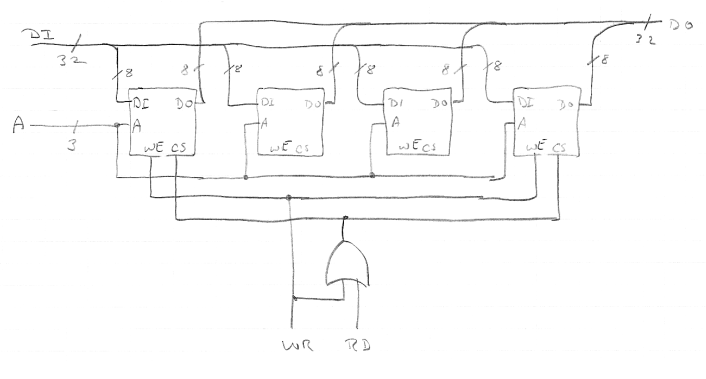
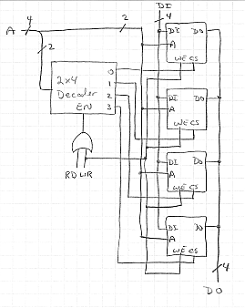

This assignment is due by midnight, May 3. Submit it by sending email to me at the address, vickery@babbage.cs.qc.edu. Be sure to put "CS-343 Assignment 5" in the subject of your email and to put your name/ID in the message body.
The assignment is to write out the answers to Exercises 7.2, 7.3, 7.4, 7.7, 7.8, 7.9, and 7.10 on pages 293 - 295 of the textbook. Submit your answers in the body of your email message, not as an attachment, and not as a Word or PDF document.
Remember, you are encouraged to use the Discussion Board on the course's Blackboard page (blackboard.qc.edu) when you are working on this and all other assignments in this course.
| Op | B | A | op(A, B) | Address | Contents |
|---|---|---|---|---|---|
| 00 | 0000 0100 | 0001 0000 | 0001 0100 | 00410 | 14 |
| 01 | 0000 0100 | 0001 0000 | 0000 1100 | 10410 | 0C |
| 10 | 0000 0100 | 0001 0000 | 0100 0000 | 20410 | 40 |
| 11 | 0000 0100 | 0001 0000 | 0000 0400 | 30410 | 04 |
This is a 2m x 4n memory built from 2m x n memory chips, so there must be one row of four chips. In this case, m is 3 and n is 8.

This is a 4(2m) x n memory built from 2m x n memory chips, so there must be four rows of chips, with one column per row. In this case, m is 2 and n is 4.

16K is 214, so it takes 14 bits to select a block of main memory, plus 4 bits to select a word within a block, for a total of 18 bits for main memory addresses. Each block is mapped to one of 128 (= 27) slots in the cache, so 7 bits are required to select the slot, leaving 7 bits for the tag that the cache has to record to tell what block is occupying each slot. The format of a main memory address would be:
| Tag | Slot # | Word in Slot |
|---|---|---|
| 7 bits | 7 bits | 4 bits |
The following table shows the memory addresses that are accessed broken down by what cache slot they correspond to. For each slot, the third column shows the number of accesses made to that block per iteration of the loop.
| Address Range |
Slot Number |
Number of Accesses |
|---|---|---|
| 15 | 0 | 1 |
| 16-31 | 1 | 16 |
| 32-47 | 2 | 16 |
| 48-63 | 3 | 16 |
| 64-79 | 4 | 16 |
| 80-95 | 5 | 16 |
| 96-111 | 6 | 16 |
| 112-127 | 7 | 16 |
| 128-143 | 8 | 16 |
| 144-159 | 9 | 16 |
| 160-175 | 10 | 16 |
| 176-191 | 11 | 16 |
| 192-200 | 12 | 9 |
There are 186 locations accessed (the sum of the numbers in the third column), so for ten iterations, there would be a total of 186 * 4 = 1860 accesses, There would be 13 cache misses (once for each slot used), so the hit ratio, HR, is (1860-13)/1860 = 0.993.
The average access time would be (HR * 10) + ((1 - HR) * 210 = 11.40 nsec.
For Fig. 7-13, there are 25*23 = 28 bits per block. There are 214 slots, so there are 28*214 = 222 bits of cache for storing the information from the memory blocks. Plus there are an additional 27+1+1 = 29 bits of housekeeping information (tag, valid, and dirty bits) for each of the 214 slots, for a total of 4,669,440 bits. (About half a megabyte.)
For Fig. 7-14, the values are the same, except there are only 15 bits of housekeeping information per slot. So there are 222 plus 15*214, or 4,440,064 bits. (Less than the size of the associative cache, but still also about half a megabyte.)
Each block spans 214+5 addresses, so accesses spaced by that amount will cause a miss every time. That is, addresses 512K words apart from each other.
If there is a miss on every memory access, the hit ratio is zero and the effective access time is 1000 nsec. The 10 nsec doesn't get added in because load through is used.